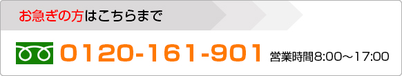

HOME ＞小切手換金
小切手換金
当社では、お客様が集金された小切手を即座に換金いたします。
例えば、金融機関が長期休みに入ってしまう連休等の前日に、小切手を資金化されておくと大変便利です。
申込条件
法人または個人が振出した小切手
用途
自由
融資額
1枚あたり 5,000万円まで
手数料
小切手額面の 0.6% ～ 0.815%
所要日数
即日（30～60分で割引の可否と割引料を決定いたします）
担保
原則として不要
保証人
原則として不要
利用可能地域
埼玉県、東京都、神奈川県、千葉県、 茨城県、群馬県、栃木県
遅延損害金
年率 20.0%
必要書類
身分証明書（免許証・パスポート等）、印鑑証明書、決算書等
割引のシミュレーション
ネットで簡単お申込み

▲ Page Top